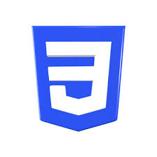
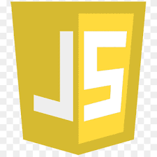
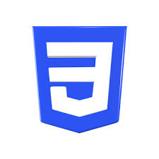
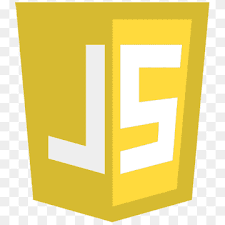
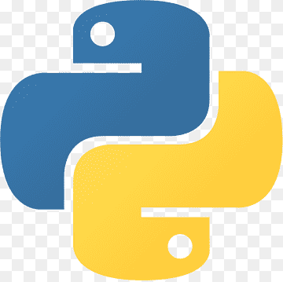
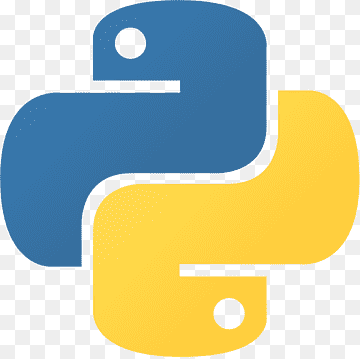

Mansi Kumawat
About Me
Hi, I’m Mansi Kumawat, a Computer Science student at Prestige Institute (Indore), specializing in Cybersecurity, IoT, and Blockchain. I’m passionate about web development and software development to solve real-world problems. I’ve worked on projects like farmify and Career path ,web apps .I am seeking internship opportunities to apply my skills. Check out my portfolio for more!
Languages I Know
 



 

Resume
-
1. Education
BTech in Computer Science: Specialization in Cybersecurity, IoT, and Blockchain at PIEMR, Indore.
Achievements: Consistently among the top-performing students, participated in various technical workshops and tech talks.
-
2. Professional Roles
Vice President, Science Club: Led multiple technical events, quizzes, and innovation competitions at the institute level.
Placement Coordinator: Assisted peers in securing internships and placements by liaising with recruiters.
-
3. Technical Skills
Programming Languages: C++, Python, JavaScript, HTML, CSS.
Cybersecurity: Basics of ethical hacking, threat analysis, and secure coding practices.
Web Development: Proficient in creating dynamic and responsive websites.
-
4. Projects
Farmify: A direct market access app for farmers, enhancing their market reach and income.
Career Path: An interactive job and internship platform for technical students.
-
5. Certifications
Certified in GDG Gen AI Program.
Completed various Workshops like AWS,Google flutter,Python and Cybersecurity.
Participated in Hackathons like Vcode,Nextgencodersetc.
-
6. Achievements
Achieved 8.5 CGPA in BTech 1st year.
Organized and and lead the science club at PIEMR.
Organized and led a successful tech fest at PIEMR.
My Resume
project
Farmify - Market Access App for Farmers
career path - for finding job and interships
Services
-
1. Web Development
Create responsive and interactive websites using modern technologies (HTML, CSS, JavaScript).
Expertise in crafting user-friendly designs and seamless user experiences.
Specialized in portfolio websites, business landing pages, and e-commerce solutions.
-
2. Cybersecurity Advisory
Provide foundational guidance on securing online assets and accounts.
Awareness workshops on data privacy and basic cybersecurity practices.
Help businesses implement essential measures to protect sensitive information.
-
3. IoT and Blockchain Applications
Offer insights into Internet of Things (IoT) solutions for smart systems.
Guide projects incorporating Blockchain for transparency and security.
-
4. Technical Workshops and Mentoring
Conduct workshops for students on coding, problem-solving, and emerging technologies.
Mentor young professionals to build project portfolios and gain industry-ready skills.
-
5. Freelance Projects
Available for collaboration on innovative ideas, startups, and hackathon projects.
Flexible in working with teams to deliver high-quality results under deadlines.
Services I Offer
Contact Me
Email: mansikumawat508@gmail.com
Phone: +91-8319128825
Location: Indore, Madhya Pradesh, India